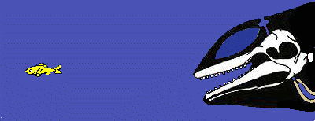

Про дельфінів загалом
Дельфіни – це морські ссавці підряду зубастих з ряду китоподібних. Дельфіни родичі китів і косаток. Ця група тварин налічує близько 40 видів. Дельфіни відрізняються від риб: вони дихають легенями, мають не луску, а шкіру, у них є зуби, вони народжують живих дитинчат, і цілий рік годують їх своїм молоком.
Живуть дельфіни в морях і океанах. Зазвичай, дельфіни живуть у прибережній зоні, де вода багата їжею і добре прогрівається. Є види, які віддають перевагу великим глибинам і холодним морям. Але є види, які живуть в прісній воді великих річок.
Дельфіни дуже добре орієнтуються у воді, в цьому їм допомагає ехолокація. Спілкуючись між собою вони видають звуки, схожі на свист, нявкання, клацання, гавкіт. Дельфіни вміють узгоджувати свої дії при полюванні на велику зграю риб або при захисті від ворога. Дельфіни допомагають один одному в разі небезпеки, вони здатні, якщо є необхідність, підняти своїх поранених товаришів на поверхню води, що б ті могли дихати. Були випадки, коли дельфіни таким чином рятували життя людині.
Вороги дельфінів
Дельфіни – наші друзі. Вони допомагають лікувати людей, особливо дітей. Є навіть такий метод лікування – дельфінотерапія. Існують військові дельфіни, вони допомагають виявляти міни і підводні човни, рятують потопаючих моряків.
У дельфінаріях можна побачити дуже цікаві вистави за участю дельфінів: вони вистрибують на сушу, ловлять носом і хвостом предмети, пірнають, «злітають над водою», катають на собі людей, «співають» і навіть малюють на прохання людини.

Ехолокатори дельфіна